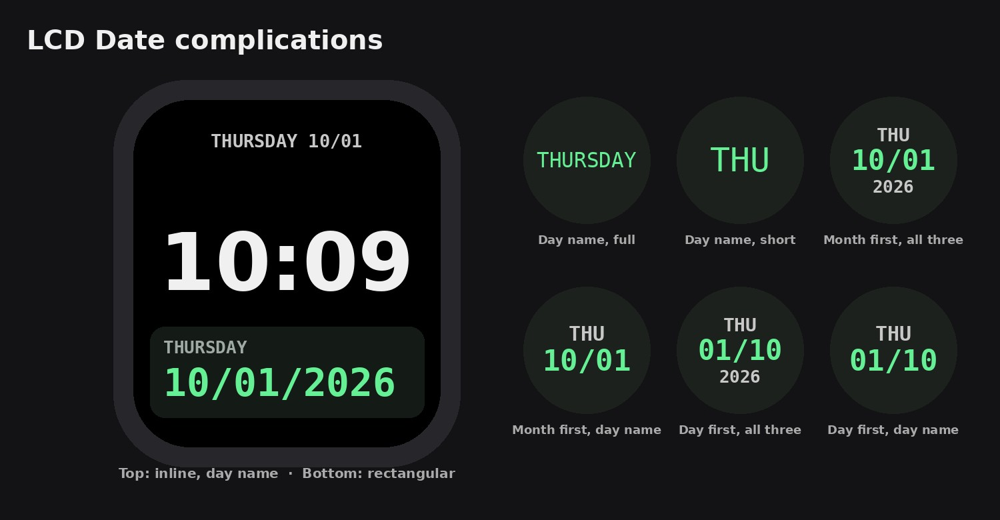

LCD Date
La fecha de hoy en tu carátula, con estilo de reloj digital retro.
Muy pronto en el App Store
- El nombre del día, soloJUEVES o JUE en su propia complicación, con las mismas letras retro.
- 24 estilos de fechaEl mes o el día primero, con barras, guiones o puntos, con o sin ceros a la izquierda.
- Nombre del día, con o sin el añoMuestra JUE, 10/01 y 2026 juntos en una complicación redonda pequeña, o JUEVES 10/01.
- Todos los espacios de complicaciónCircular, rectangular, de esquina y en línea.
- Siempre a tiempoCambia a la medianoche de tu hora local, incluso justo después de volar a otra zona horaria.
- Aspecto LCD retroNúmeros digitales verdes que toman los colores de tu carátula cuando la carátula tiene un tono de color.
Apple Watch con watchOS 27 o posterior. No necesita una app para iPhone.